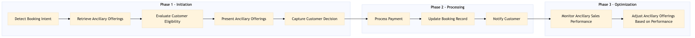

Process for presenting ancillary upsell seat bag insurance during the booking flow on OTA platforms.
| Trigger | Customer initiates a flight booking through Expedia Group's online booking systems. |
| Outcome | Successful presentation and sale of seat bag insurance to the customer, leading to increased revenue for the OTA. |
| Systems | Expedia Open World Partner Central Amadeus NDC Sabre GDS Travelport EVC One Key TravelAds AWS SageMaker Snowflake Salesforce Tableau |

Click to enlarge
| Step | Name & Pain Point | Role | System | Input | Output | KPI | Flags |
|---|---|---|---|---|---|---|---|
| 1.1 | Detect Booking Intent Low detection rate of eligible bookings | OTA System | Expedia Open World, Partner Central | Customer's flight booking details | Booking intent detected | 90% detection rate of eligible bookings | ◆ Decision |
| 1.2 | Retrieve Ancillary Offerings Inconsistent availability of ancillary products | OTA System | Amadeus NDC, Sabre GDS, Travelport, EVC, One Key, TravelAds | Booking details | List of ancillary offerings including seat bag insurance | 100% retrieval rate of available offers | ⚠ Exception |
| 1.3 | Evaluate Customer Eligibility Incorrect eligibility assessment | OTA System | AWS SageMaker, Snowflake | Customer profile and booking details | Eligibility status for seat bag insurance | 95% accuracy in eligibility determination | ◆ Decision |
| 1.4 | Present Ancillary Offerings Low customer engagement with ancillary offers | OTA System | Expedia Open World, Partner Central | Eligible ancillary offerings | Customer views seat bag insurance offer | 80% presentation rate of ancillary offers | ⚠ Exception |
| 1.5 | Capture Customer Decision Low conversion rates from ancillary offer presentations | OTA System | Expedia Open World, Partner Central | Customer's decision to purchase or decline seat bag insurance | Customer decision recorded | 70% conversion rate of ancillary offers | ◆ Decision |
| 1.6 | Process Payment High payment failure rates | OTA System | Amex GBT Neo/Complete, Amadeus GDS, Travelport | Customer's payment details and selected ancillary product | Payment processed successfully | 98% successful payment rate | ⚠ Exception |
| 1.7 | Update Booking Record Inaccurate or incomplete booking records | OTA System | Expedia Open World, Partner Central | Payment confirmation and ancillary product details | Booking record updated with ancillary purchase | 100% accuracy in booking record updates | ⚠ Exception |
| 1.8 | Notify Customer Low customer satisfaction due to lack of notifications | OTA System | Salesforce, Tableau | Booking record with ancillary purchase | Customer receives confirmation email | 95% customer notification rate | ⚠ Exception |
| 1.9 | Monitor Ancillary Sales Performance Inability to track and analyze ancillary sales effectively | OTA System | AWS SageMaker, Snowflake | Ancillary sales data | Performance metrics and insights | Continuous improvement in ancillary sales performance | ⚠ Exception |
| 1.10 | Adjust Ancillary Offerings Based on Performance Inflexible or outdated ancillary product offerings | OTA System | Expedia Open World, Partner Central | Performance metrics and insights | Updated ancillary offerings | Improved conversion rates through optimized offers | ◆ Decision |